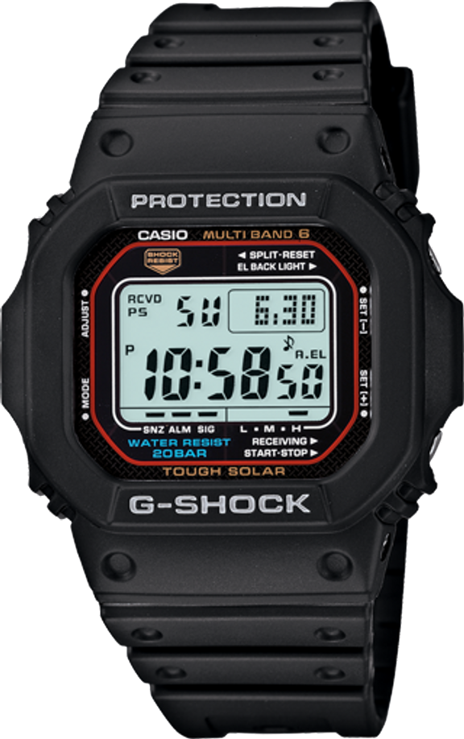
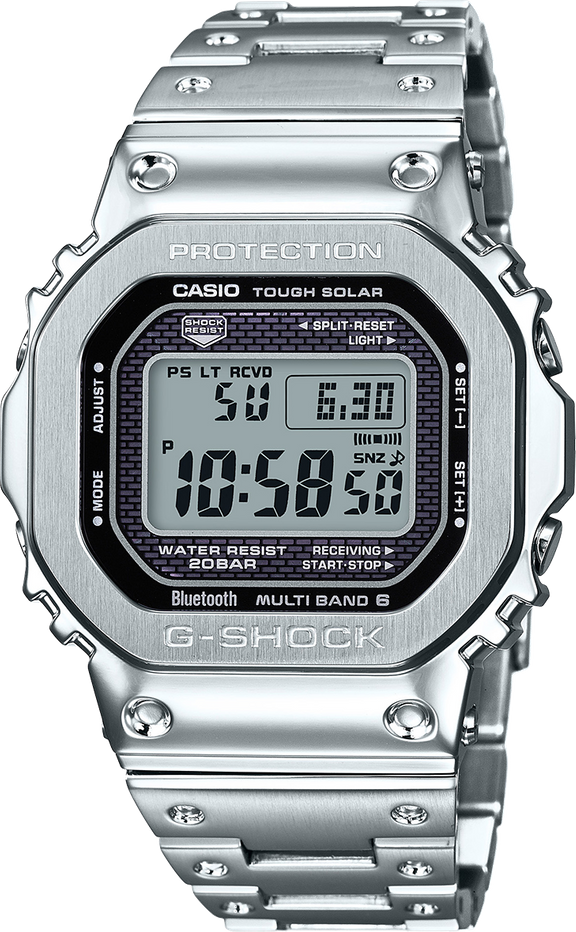
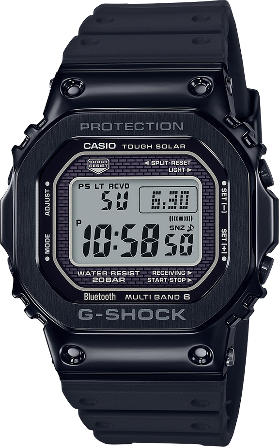
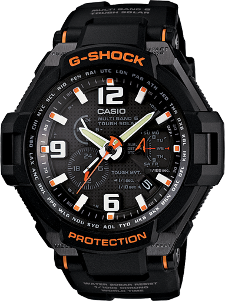
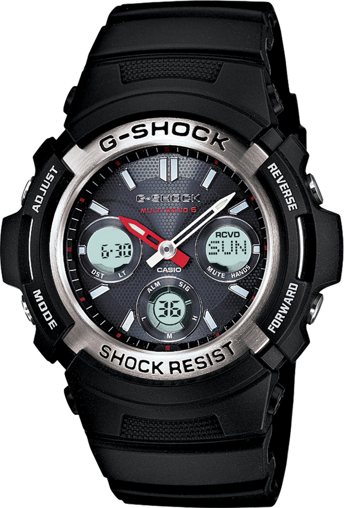
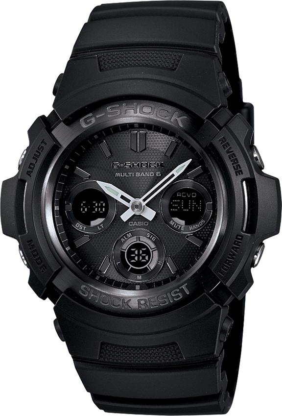
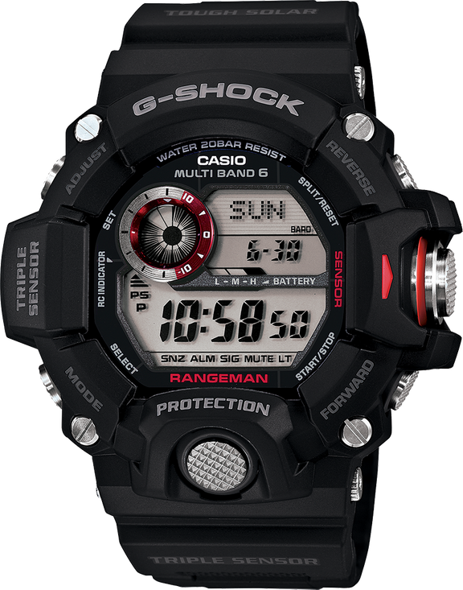
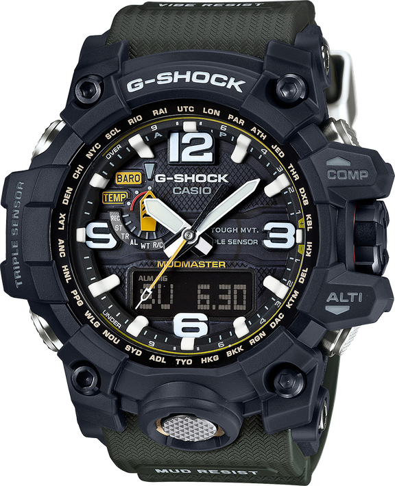

Gshock Watches
Gshock simplifies my life.
I like Gs with solar power and atomic timekeeping.
GWM5610-1 is my everyday watch. It is not waterproof after I changed the battery myself. Price is $140.
 Figure 1: GWM5610-1 GWMB5000 is a full metal version of G-Square. Price is $550.
 Figure 2: GMWB5000D-1  Figure 3: GMWB5000G-1 GW4000 is a full-analog watch. As of 2021 Feb, It is discontinued unfortunately. Price is $350.
 Figure 4: GW4000-1A AWGM100 is a digit-analog watch. Price is $150.
 Figure 5: AWGM100-1A  Figure 6: AWGM100B-1A GW9400 RANGEMAN, Master of G series. Price is $330.
 Figure 7: GW9400-1 Rangeman GWG1000 MUDMASTER, Master of G series. Price is $800.
 Figure 8: GWG1000-1a3